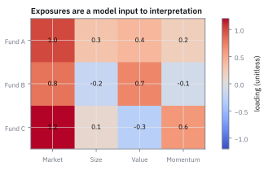

15.3 Multi-Factor Models
ให้ปัจจัยไม่กี่ตัวอธิบายว่าหุ้นขยับร่วมกันอย่างไร แล้วใช้มันทั้งแยกฝีมือออกจาก exposure และสร้าง covariance ของหุ้นหลายร้อยตัวจากตัวเลขไม่กี่พันตัว
ทีมจะใช้ Markowitz (12.5) จัดพอร์ตหุ้น 500 ตัวจากข้อมูลรายวันหนึ่งปี นับเป็น 250 วันตามที่งานความเสี่ยงมักปัดข้อมูลหนึ่งปี (ปีจริงมี 252 วันซื้อขายตาม 1.1) ข้อมูลมี $500\times250=125{,}000$ ตัวเลข ส่วน covariance matrix ต้องประมาณ 125,250 ตัวเลข นักวิเคราะห์บอกว่า “ข้อมูลเกือบหนึ่งตัวต่อหนึ่งตัวเลข ถือว่าพอ” ใช้ได้ไหม?
ลองตอบก่อนเปิดเฉลย
ใช้ไม่ได้ และปัญหาหนักกว่าแค่ข้อมูลน้อย matrix ที่ได้มี rank ไม่เกิน 249 จึงมีทิศทางพอร์ต 251 ทิศที่ข้อมูลบอกว่าไม่มีความเสี่ยงเลย optimizer จะทุ่มเงินลงทิศพวกนั้นทันที model ห้าปัจจัยใช้ตัวเลขแค่ 3,015 ตัว ได้ข้อมูลราว 41.5 จุดต่อตัว ลดภาระลง 97.6% และ matrix ที่ได้มี inverse เสมอ ราคาที่จ่ายคือต้องเชื่อว่าหุ้นขยับร่วมกันผ่านปัจจัยเท่านั้น
สิ่งที่เราจะสร้าง
15.2 ใช้ตลาดเป็นแรงผลักเพียงตัวเดียว หน้านี้เปิดให้มีหลายแรง เช่น ขนาดบริษัท มูลค่าตามบัญชี และ momentum ใช้สองงาน งานแรกคือแยกผลตอบแทนของกองทุนว่ามาจากแรงไหนเท่าไร ซึ่งเปลี่ยนตัวเลข alpha ได้มาก งานที่สองซึ่งใหญ่กว่าคือสร้าง covariance ของหุ้นจำนวนมากจากตัวเลขไม่กี่ตัว
เราจะนิยาม model แล้วแยกผลตอบแทนของกองทุนหนึ่งด้วยมือ ดูว่าทำไม loading แยกกันไม่ออกเมื่อปัจจัยคล้ายกัน พิสูจน์ว่าทำไมผลตอบแทนคาดหวังต้องเป็นเส้นตรงของ loading (APT) จากนั้นสร้าง covariance จาก model นับตัวเลขที่ต้องประมาณ ดูว่า sample covariance พังอย่างไรเมื่อหุ้นมากกว่าวัน และแก้ด้วยโครงสร้างกับ shrinkage
ศัพท์ที่ใช้ในหัวข้อนี้
- Factor
- ผลตอบแทนของพอร์ตที่สร้างตามกติกาที่ตรึงไว้ เช่นซื้อหุ้นเล็กขายหุ้นใหญ่ ใช้แทนแรงร่วมที่ทำให้หุ้นหลายตัวขยับพร้อมกัน
- Factor loading
- slope ของผลตอบแทนหุ้นหรือกองทุนบน factor หนึ่ง ในขณะที่ถือ factor อื่นคงที่ ใช้วัด exposure สำหรับ attribution และ hedge
- Multi-factor model
- regression ของ excess return บน factor หลายตัวพร้อมกัน ใช้แยกส่วนที่แรงร่วมอธิบายออกจากส่วนเฉพาะตัว
- Multicollinearity
- สภาพที่ factor สองตัวขยับคล้ายกันมาก ผลรวมยังอธิบายได้ดี แต่ loading แต่ละตัวแยกไม่ออก SE พองขึ้นหลายเท่า
- Arbitrage Pricing Theory (APT)
- ทฤษฎีที่บอกว่าถ้าไม่มีกำไรฟรี ผลตอบแทนคาดหวังต้องเป็นเส้นตรงของ loading ใช้แทน CAPM โดยไม่ต้องสมมติว่าทุกคนใช้ mean–variance
- Idiosyncratic variance
- variance ของส่วนที่ factor อธิบายไม่ได้ในหุ้นแต่ละตัว เก็บบนแนวทแยงของ $D$ ใช้เป็นส่วนที่รับประกันว่า covariance ของ model มี inverse
- Shrinkage estimator
- การดึง sample covariance เข้าหา matrix ที่มีโครงสร้าง ด้วยน้ำหนัก $\delta$ ยอมเอนเอียงเล็กน้อยเพื่อแลกกับความคลาดที่ลดลงมาก
สัญลักษณ์และหน่วย
| สัญลักษณ์ | ความหมาย | หน่วย |
|---|---|---|
| $r_{i,t}$ | excess return ของหุ้นหรือกองทุน $i$ | % ต่อช่วง |
| $f_{k,t},\ \tilde f_k$ | ผลตอบแทนของ factor $k$ และส่วนที่เบี่ยงจากค่าเฉลี่ย | % ต่อช่วง |
| $b_{ik},\ a_i$ | loading ของ $i$ ต่อ factor $k$ และ intercept หลังหักทุก factor | ไม่มีหน่วย และ % ต่อช่วง |
| $u_{i,t}$ | ส่วนเฉพาะตัวที่ factor อธิบายไม่ได้ | % ต่อช่วง |
| $N,\ K,\ T$ | จำนวนหุ้น จำนวน factor และจำนวนวันของข้อมูล | นับ |
| $B,\ \Sigma_f,\ D$ | matrix $N\times K$ ของ loading, covariance ของ factor และ diagonal matrix ของ idiosyncratic variance | ไม่มีหน่วย และ %² |
| $\Sigma,\ S$ | covariance ที่ model สร้าง และ sample covariance จากข้อมูล | %² |
| $\lambda_k,\ \delta$ | ผลตอบแทนคาดหวังต่อ loading หนึ่งหน่วย และน้ำหนัก shrinkage | % ต่อช่วง และไม่มีหน่วย |
ขั้นที่ 1 — นิยาม model หลายปัจจัย และผลตอบแทนคาดหวังของมัน
เขียนสมการของ 15.2 ใหม่ โดยให้มี factor $K$ ตัวแทนตลาดตัวเดียว loading ประมาณด้วย regression หลายตัวแปร ซึ่งคือ $X^{\mathsf T}X\hat\beta=X^{\mathsf T}\mathbf y$ ของ 15.1 ที่ $X$ มี $K+1$ คอลัมน์ บรรทัดแรกเป็นนิยาม ส่วนบรรทัดสุดท้ายได้จากการหาค่าคาดหวังทั้งสองข้าง
ค่าคาดหวังของผลบวกคือผลบวกของค่าคาดหวัง (1.3) และ $b_{ik}$ เป็นตัวเลขคงที่ จึงดึงออกมานอก $\mathbb E$ ได้ ส่วนที่เหลือมีค่าเฉลี่ยศูนย์ด้วยเหตุผลเดียวกับ 15.2 คือ intercept ดูดค่าเฉลี่ยไปหมดแล้ว
สิ่งที่สูตรไม่ได้บอกคือ รายชื่อ factor เป็นการตัดสินใจของเรา ไม่ใช่ข้อเท็จจริง ใส่ factor เพิ่มแล้ว SSE ไม่มีทางเพิ่ม alpha ที่เหลือจึงหดได้เสมอด้วยการเพิ่มคอลัมน์เฉย ๆ ต้องตรึงรายชื่อ factor ก่อนดูผล
ขั้นที่ 2 — กองทุน A: alpha ของ CAPM 0.36% เหลือเท่าไรเมื่อหักสี่ปัจจัย
โจทย์ให้อะไรมาบ้าง: กองทุน A มี loading ต่อ market, size, value และ momentum เท่ากับ 1.0, 0.3, 0.4 และ 0.2 สมมติผลตอบแทนคาดหวังรายเดือนของสี่ factor เป็น 0.6%, 0.2%, 0.3% และ 0.4% และ $a=0.10\%$ กองทุนมีเงิน \$10 ล้าน สมมติต่อว่า size, value และ momentum ไม่มี covariance กับ market
คำตอบ: กองทุนคาดได้ 0.96% ต่อเดือน หรือ \$96,000 บนเงิน \$10 ล้าน ถ้าวัดด้วย CAPM ตัวเดียว alpha คือ 0.36% หรือ \$36,000 ต่อเดือน แต่ 0.26 จุดในนั้นมาจาก exposure ต่อ size, value และ momentum ที่ซื้อได้ถูกด้วยกองทุน factor เมื่อหักสี่ปัจจัยแล้วเหลือ alpha จริงแค่ 0.10% หรือ \$10,000 ค่าธรรมเนียมที่คิดจาก “alpha” จึงควรคิดจากตัวหลัง
ตรวจเองใน 10 วินาที: $0.60+0.06+0.12+0.08=0.86$ บวก 0.10 ได้ 0.96 ส่วน $\beta_{\rm CAPM}=b_M$ ได้เพราะสมมติว่าอีกสาม factor ไม่มี covariance กับตลาด ถ้ามี slope ของ CAPM จะดูด exposure ส่วนนั้นเข้ามาด้วย
Figure 15.3a — แผนที่ loading ของสามกองทุน

Figure 15.3b — บัญชีส่วนร่วมของแต่ละ factor ในกองทุน A

ขั้นที่ 3 — factor ที่คล้ายกันทำให้ loading แยกกันไม่ออก
ถ้า value กับ factor ใหม่ตัวหนึ่งขยับด้วยกันแทบตลอด regression จะรู้ได้อย่างไรว่าผลตอบแทนมาจากตัวไหน? ดูจาก variance ของค่าประมาณ สมมติสอง factor ถูกปรับให้มีค่าเฉลี่ยศูนย์ variance หนึ่ง และ correlation $\rho$ มีข้อมูล $n$ ช่วง ส่วนที่เหลือมี variance $\sigma^2$ อิสระกัน
บรรทัดที่สองมาจากการแทน $\mathbf y=X\beta+\varepsilon$ ลงในบรรทัดแรก ส่วนที่สุ่มคือ $(X^{\mathsf T}X)^{-1}X^{\mathsf T}\varepsilon$ covariance ของมันคือ $(X^{\mathsf T}X)^{-1}X^{\mathsf T}(\sigma^2I)X(X^{\mathsf T}X)^{-1}$ ซึ่งยุบเหลือ $\sigma^2(X^{\mathsf T}X)^{-1}$ ตัวคูณ $1/(1-\rho^2)$ เรียกว่า variance inflation factor
ที่ $\rho=0.9$ variance พองขึ้น 5.26 เท่า SE พองขึ้น $\sqrt{5.26}\approx2.29$ เท่า ที่ 0.99 SE พอง 7.09 เท่า แต่ผลรวม $\hat b_1+\hat b_2$ มี variance $\tfrac{\sigma^2}{n}\cdot\tfrac{2}{1+\rho}$ ซึ่งที่ 0.9 แค่ 1.05 เท่า model รวมยังทำนายได้ดี แค่แบ่งเครดิตให้แต่ละ factor ไม่ได้
Figure 15.3c — variance ของ loading พองขึ้นเมื่อ factor คล้ายกัน

ขั้นที่ 4 — ทำไมผลตอบแทนคาดหวังต้องเป็นเส้นตรงของ loading (APT)
เริ่มจากตัวอย่าง สมมติพอร์ตกระจายตัวดีสามพอร์ตที่ความเสี่ยงเฉพาะตัวเกือบหมดไปแล้ว มีปัจจัยเดียว P1 มี loading 0.5 คาดได้ 0.55% ต่อเดือน P2 มี loading 1.5 คาดได้ 1.25% ผสม P1 กับ P2 อย่างละครึ่งได้ loading 1.0 และคาดได้ 0.90% ถ้า P3 มี loading 1.0 แต่คาดได้ 1.00% ก็ซื้อ P3 หนึ่งดอลลาร์ ขายส่วนผสมหนึ่งดอลลาร์ ไม่ใช้เงินและไม่มีความเสี่ยงปัจจัย แต่ได้ 0.10% ต่อเดือนฟรี ทุกคนจะทำจนราคา P3 ขึ้นและผลตอบแทนคาดหวังลงเหลือ 0.90% จุดทั้งสามจึงต้องอยู่บนเส้นเดียว $0.20+0.70b$
บรรทัดที่สองคือพอร์ตที่ไม่ใช้เงินและไม่มี exposure ต่อ factor ใดเลย พจน์ factor จึงหายในบรรทัดที่สาม เมื่อกระจายน้ำหนักไปหลายร้อยตัว ส่วนเฉพาะตัวที่อิสระกันเหลือ variance ราว $\sigma_u^2/N$ ใกล้ศูนย์ พอร์ตที่ไม่ใช้เงินและไม่มีความเสี่ยงต้องได้ผลตอบแทนศูนย์ ไม่อย่างนั้นเป็นกำไรฟรี
จังหวะที่ยากคือบรรทัดสุดท้าย: ทุก $w$ ที่ตั้งฉากกับ vector ของ 1 และกับทุกคอลัมน์ของ $B$ ต้องตั้งฉากกับ $\mu$ ด้วย แปลว่า $\mu$ อยู่ใน span ของ vector เหล่านั้น (range กับ null space ใน 7.5) สินทรัพย์ที่ loading ศูนย์ทุกตัวต้องได้ $\lambda_0=R_f$ และ $\lambda_k$ คือราคาของ factor $k$ ต่อ loading หนึ่งหน่วย
ขั้นที่ 5 — covariance ของหุ้นทุกตัวจาก model: $B\Sigma_fB^{\mathsf T}+D$
ประโยชน์ที่ใหญ่กว่า attribution คือการสร้าง covariance เขียนสมการของขั้นที่ 1 สำหรับหุ้นทุกตัวพร้อมกันเป็น vector ลบค่าเฉลี่ยออก แล้วใส่นิยาม covariance ของ 8.1 ข้อสมมติสองข้อทำงานในบรรทัดที่ห้า
กระจายผลคูณได้สี่ก้อน ก้อนแรกคือแรงร่วม ก้อนที่สองคือส่วนเฉพาะตัว สองก้อนสุดท้ายเป็นพจน์ไขว้ ข้อสมมติแรกคือส่วนเฉพาะตัวไม่เกี่ยวกับ factor พจน์ไขว้จึงหาย ข้อสมมติที่สองคือส่วนเฉพาะตัวของหุ้นสองตัวไม่เกี่ยวกัน $\mathbb E[uu^{\mathsf T}]$ จึงเหลือแต่แนวทแยง
ผลคือการขยับร่วมกันทั้งหมดของหุ้นสองตัวต้องผ่าน factor ถ้าหุ้นธนาคารสองตัวมีข่าวร้ายร่วมกันที่ factor ไม่รู้จัก model จะมองไม่เห็น ข้อนี้กลับมาใน pitfall ท้ายหน้า
ขั้นที่ 6 — หุ้นสองตัว หนึ่ง factor: คำนวณทุกช่อง
โจทย์ให้อะไรมาบ้าง: loading $B=(1.2, 0.8)^{\mathsf T}$ variance ของ factor 1.00 %² ต่อวัน และ idiosyncratic variance 2.25 กับ 4.00 %² ต่อวัน (ตัวเลขสมมติ)
คำตอบ: covariance ของสองหุ้นคือ 0.96 %² ต่อวัน มาจาก $1.2\times0.8\times1.00$ เท่านั้น correlation 0.232 ไม่มีใครวัดตรง ๆ มันถูกสร้างจาก loading สองตัว eigenvalue ทั้งสองเป็นบวก (ผลคูณคือ det 16.20 ผลบวกคือ trace 8.33) matrix นี้จึงเป็น positive definite และมี inverse
ตรวจเองใน 10 วินาที: พอร์ตครึ่งต่อครึ่งมี variance $0.25(3.69+4.64+2\times0.96)=2.5625$ แยกได้เป็น factor $(0.5\times1.2+0.5\times0.8)^2=1.00$ บวกเฉพาะตัว $0.25(2.25)+0.25(4.00)=1.5625$ รวมกันได้ 2.5625 เท่ากัน
ขั้นที่ 7 — นับตัวเลขที่ต้องประมาณ: 500 หุ้น
โจทย์ให้อะไรมาบ้าง: หุ้น $N=500$ ตัว ข้อมูล $T=250$ วัน model ห้าปัจจัย ($K=5$) covariance แบบตรงต้องการ variance $N$ ตัวบนแนวทแยงกับคู่ที่ไม่ซ้ำ $N(N-1)/2$ คู่ (8.1) ส่วน model ต้องการ loading $NK$ ตัว covariance ของ factor $K(K+1)/2$ ตัว และ idiosyncratic variance $N$ ตัว
คำตอบ: แบบตรงมีข้อมูลไม่ถึงหนึ่งจุดต่อตัวเลข model ห้าปัจจัยมี 41.5 จุดต่อตัวเลข และลดภาระลง 97.6% ถ้าใช้กฎหัวแม่มือที่อยากได้ราว 30 จุดต่อตัวเลข แบบตรงต้องใช้ $125{,}250\times30/500=7{,}515$ วัน หรือราว 29.8 ปีที่ 252 วันต่อปี ซึ่งหุ้นครึ่งหนึ่งในดัชนียังไม่เข้าตลาดด้วยซ้ำ ส่วน model ใช้ราว 181 วัน
ตรวจเองใน 10 วินาที: $500\times499/2=124{,}750$ คู่นอกแนวทแยง บวก 500 บนแนวทแยงได้ 125,250 และ $5\times6/2=15$ คือจำนวนตัวเลขใน covariance ของห้า factor
Figure 15.3d — ภาระการประมาณโตเป็นกำลังสอง เทียบกับเกือบเส้นตรง

ขั้นที่ 8 — หุ้นมากกว่าวัน: sample covariance บอกว่ามีพอร์ตที่ไม่มีความเสี่ยง
นับอย่างเดียวยังไม่พอ ปัญหาที่หนักกว่าเห็นได้จากตัวอย่างเล็กที่สุด หุ้นสามตัว ข้อมูลสองวัน: วันแรกได้ $(1, 2, 0)\%$ วันที่สองได้ $(3, 0, 2)\%$ ค่าเฉลี่ยคือ $(2, 1, 1)$
ข้อมูลสองวันบอกว่าพอร์ตที่ซื้อหุ้นแรกกับหุ้นที่สองอย่างละเท่ากันไม่มีความเสี่ยงเลย เพราะในสองวันนั้นสองตัวขยับสวนกันพอดี พอร์ต $(1, 0, -1)$ ก็ได้ศูนย์เช่นกัน ใครที่เอา $S$ นี้ไปให้ optimizer จะได้พอร์ตที่ lever ทิศนี้ไม่จำกัด
ในกรณีทั่วไป $S$ เป็นผลรวมของ $T$ ก้อนที่แต่ละก้อนมี rank หนึ่ง และเพราะ $d_t$ รวมกันได้ศูนย์ ก้อนสุดท้ายเขียนได้จากก้อนอื่น rank จึงไม่เกิน $T-1$ หุ้น 500 ตัวกับ 250 วันได้ rank ไม่เกิน 249 เหลือ eigenvalue ศูนย์อย่างน้อย 251 ตัว คือ 251 ทิศทางที่ข้อมูลบอกว่าไม่มีความเสี่ยง ทั้งที่โลกจริงไม่ใช่
ขั้นที่ 9 — covariance ของ model มี inverse เสมอ และ shrinkage ซ่อม $S$ ได้
ทำไม model ไม่พังแบบเดียวกัน? คำนวณความเสี่ยงของพอร์ต $w$ ใด ๆ จาก $\Sigma=B\Sigma_fB^{\mathsf T}+D$ แล้วดูว่ามันเป็นศูนย์ได้หรือไม่ จากนั้นดูวิธีที่งานจริงใช้ซ่อม $S$ โดยผสมมันกับ matrix ที่มีโครงสร้าง $F$
ก้อนแรกไม่ติดลบเพราะ $\Sigma_f$ เป็น covariance ก้อนที่สองเป็นบวกทุกครั้งที่ $w$ ไม่เป็นศูนย์ เพราะหุ้นทุกตัวมีความเสี่ยงเฉพาะตัว พอร์ต $(1, -1.5)$ ของขั้นที่ 6 ตัด factor ได้หมด แต่ยังเหลือ 11.25 %² ต่อวัน $D$ เติมค่าบวกลงแนวทแยง จึงไม่มีทิศไหนที่ความเสี่ยงเป็นศูนย์
shrinkage ใช้แนวคิดเดียวกันกับ $S$ ที่พัง ผสมครึ่งหนึ่งกับแนวทแยงของมันเอง พอร์ต $(1, 1, 0)$ ได้ variance 2 แทน 0 และ eigenvalue เปลี่ยนจาก 6, 0, 0 เป็น 4, 1, 1 เพราะ $\Sigma_{\rm sh}=I+0.5S$ วิธีของ Ledoit–Wolf เลือก $\delta$ จากข้อมูล ส่วน 0.5 ที่นี่ตั้งเพื่อสาธิต
คำถามที่ควรถามออกมาดัง ๆ
factor มาจากไหน? ส่วนใหญ่เป็นผลตอบแทนของพอร์ต long–short ที่สร้างตามกติกา เช่น size คือหุ้นเล็กลบหุ้นใหญ่ value คือหุ้นที่ราคาถูกเทียบมูลค่าทางบัญชีลบหุ้นที่แพง momentum คือผู้ชนะลบผู้แพ้ (15.6) กติกา วันที่ข้อมูลพร้อมใช้ และการ rebalance ต้องตรึงก่อนวัดผล ไม่อย่างนั้น loading เปลี่ยนความหมายตามผลที่อยากได้
ใส่ factor เยอะ ๆ ไม่ดีกว่าหรือ? ในข้อมูลเก่า ดีกว่าเสมอ เพราะ SSE ไม่มีทางเพิ่ม แต่ factor ที่ค้นเจอจากข้อมูลชุดเดิมจำนวนมากใช้ไม่ได้กับข้อมูลใหม่ และ factor ที่คล้ายกันทำให้ loading ไม่นิ่งตามขั้นที่ 3 15.5 วัดว่าการค้นหาแบบนี้หลอกได้แค่ไหน
ความผิดที่ทำให้ความเสี่ยงดูต่ำกว่าจริง
ส่วนเฉพาะตัวที่ไม่เฉพาะตัวจริง: ถ้าสองหุ้นในขั้นที่ 6 เป็นธนาคารที่ส่วนเฉพาะตัวมี correlation 0.5 จริง covariance ที่แท้คือ $0.96+0.5(1.5)(2.0)=2.46$ ไม่ใช่ 0.96 พอร์ตครึ่งต่อครึ่งมี SD จริง 1.820% ต่อวัน แต่ model รายงาน 1.601% ต่ำไป 12% โดยไม่มีสัญญาณเตือน งานจริงจึงเพิ่ม factor ของอุตสาหกรรมเข้าไป
อ่าน loading ทีละตัวตอนที่ factor คล้ายกัน: ที่ correlation 0.9 SE ของแต่ละ loading พองขึ้น 2.29 เท่า loading ที่ดูเหมือนบวกชัดอาจสลับเครื่องหมายเมื่อเพิ่มข้อมูลอีกไม่กี่เดือน ให้รายงานผลรวมของกลุ่ม factor ที่คล้ายกัน หรือรวมมันเป็นตัวเดียวก่อน
ใช้ sample covariance ตรง ๆ เมื่อหุ้นมากกว่าวัน: optimizer ไม่รู้ว่า 251 ทิศที่ความเสี่ยงเป็นศูนย์เป็นภาพลวง มันจะถือทิศเหล่านั้นหนักที่สุด ผลคือพอร์ตที่ความเสี่ยงจริงสูงกว่าที่รายงานหลายเท่า
ใช้ทำอะไรบนโต๊ะจริง
risk model เชิงพาณิชย์ที่โต๊ะหุ้นใช้ทุกวันเป็น factor model ที่มี factor ของตลาด อุตสาหกรรม และลักษณะของบริษัทหลายสิบตัว ใช้คำนวณความเสี่ยงของพอร์ตหลายพันตัว ฝ่ายวัดผลใช้ regression หลายตัวแปรตัดสินว่าผู้จัดการได้ alpha จริงหรือแค่ถือ exposure ที่ซื้อได้ถูก และผู้จัดการใช้ loading ของพอร์ตสร้างพอร์ตที่เป็นกลางต่อ factor ที่ไม่ต้องการ
สามโจทย์ตรวจความเข้าใจ
1. กองทุน C มี loading (1.2, 0.1, −0.3, 0.6) ต่อ market, size, value, momentum และ $a=0$ ใช้ premium ชุดเดียวกับขั้นที่ 2 ผลตอบแทนคาดหวังและ alpha ของ CAPM เป็นเท่าไร
เฉลย
$1.2(0.6)+0.1(0.2)-0.3(0.3)+0.6(0.4)=0.72+0.02-0.09+0.24=0.89\%$ ภายใต้ข้อสมมติเดียวกันว่า factor อื่นไม่มี covariance กับตลาด alpha ของ CAPM คือ $0.89-1.2(0.6)=0.17\%$ ทั้งที่ alpha หลังหักสี่ปัจจัยเป็นศูนย์ ทั้ง 0.17 จุดมาจาก momentum และ size ที่หักด้วย value ติดลบ
2. หุ้น 100 ตัว model สามปัจจัย ต้องประมาณกี่ตัวเลข เทียบกับ covariance แบบตรง
เฉลย
แบบตรง $100(101)/2=5{,}050$ model $100(3)+3(4)/2+100=300+6+100=406$ ลดลง $1-406/5{,}050\approx92\%$
3. ในขั้นที่ 8 ถ้าได้ข้อมูลวันที่สาม $(2, 1, 4)\%$ เพิ่ม ค่าเฉลี่ยใหม่คือ $(2, 1, 2)$ rank ของ $S$ เป็นเท่าไร และพอร์ต $(1, 1, 0)$ ยังไม่มีความเสี่ยงไหม
เฉลย
ระยะห่างจากค่าเฉลี่ยใหม่คือ $(-1, 1, -2)$, $(1, -1, 0)$, $(0, 0, 2)$ ทุกตัวมีสองช่องแรกเป็นคู่ตรงข้าม พอร์ต $(1, 1, 0)$ จึงได้ $d_t^{\mathsf T}w=0$ ทุกวัน variance ยังเป็นศูนย์ rank คือ 2 ตาม $T-1=2$ วันที่สามหุ้นแรกกับหุ้นที่สองอยู่ตรงค่าเฉลี่ยพอดี ข้อมูลเพิ่มหนึ่งวันลดทิศที่ไม่มีความเสี่ยงจากสองเหลือหนึ่ง แต่ยังไม่หมด
คำนวณซ้ำด้วย JavaScript
รันใน Node.js ได้โดยไม่ต้องติดตั้งอะไร โค้ดคำนวณ attribution ของกองทุน A, variance inflation, covariance ของ model หุ้นสองตัวพร้อม eigenvalue, จำนวน parameter, sample covariance ของตัวอย่างสามหุ้นสองวันพร้อม rank และ shrinkage และสุ่มข้อมูล 25 วันของหุ้น 50 ตัวด้วย seed ตายตัวเพื่อยืนยันว่า rank เป็น 24 ตรวจรูปร่างของ matrix, variance ที่ต้องเป็นบวก และช่วงของ $\delta$ กับ $\rho$
function checkMatrix(A, name) {
if (!Array.isArray(A) || A.length === 0 || !A.every(r => Array.isArray(r) && r.length === A[0].length && r.every(Number.isFinite))) {
throw new TypeError(name + ' must be a non-empty rectangular matrix of finite numbers');
}
return [A.length, A[0].length];
}
const transpose = A => A[0].map((_, j) => A.map(r => r[j]));
function multiply(A, B) {
const [, k] = checkMatrix(A, 'Left matrix'), [k2] = checkMatrix(B, 'Right matrix');
if (k !== k2) throw new RangeError('Inner dimensions do not match');
return A.map(r => B[0].map((_, j) => r.reduce((s, v, t) => s + v * B[t][j], 0)));
}
const quadratic = (S, w) => w.reduce((s, wi, i) => s + wi * S[i].reduce((t, v, j) => t + v * w[j], 0), 0);
// Expected excess return split into alpha plus loading times premium for each factor.
function attribution(alpha, loadings, premiums) {
if (!Number.isFinite(alpha) || !Array.isArray(loadings) || !Array.isArray(premiums) || loadings.length !== premiums.length) {
throw new TypeError('Need a finite alpha and loadings and premiums of the same length');
}
if (![...loadings, ...premiums].every(Number.isFinite)) throw new TypeError('Loadings and premiums must be finite');
const contributions = loadings.map((b, k) => b * premiums[k]);
const expected = alpha + contributions.reduce((s, v) => s + v, 0);
// If the other factors are uncorrelated with the market (factor 0), a market-only regression keeps
// slope loadings[0] and its intercept absorbs every other contribution.
return {contributions, expected, capmAlpha: expected - contributions[0]};
}
// Factor-model covariance B F B^T + diag(d); every residual variance must be positive.
function factorCovariance(B, F, d) {
const [n, k] = checkMatrix(B, 'Loadings'), [k1, k2] = checkMatrix(F, 'Factor covariance');
if (k1 !== k || k2 !== k) throw new RangeError('Factor covariance must be K by K');
if (!Array.isArray(d) || d.length !== n || !d.every(v => Number.isFinite(v) && v > 0)) {
throw new RangeError('Need one positive residual variance per asset');
}
return multiply(multiply(B, F), transpose(B)).map((r, i) => r.map((v, j) => v + (i === j ? d[i] : 0)));
}
function eigen2(S) {
const tr = S[0][0] + S[1][1], det = S[0][0] * S[1][1] - S[0][1] * S[1][0], gap = Math.sqrt(tr * tr - 4 * det);
return {det, values: [(tr - gap) / 2, (tr + gap) / 2]};
}
const countParameters = (N, K) => ({direct: N * (N + 1) / 2, factor: N * K + K * (K + 1) / 2 + N});
function sampleCovariance(rows) {
const [T, N] = checkMatrix(rows, 'Returns');
if (T < 2) throw new RangeError('Need at least two dates');
const mean = rows[0].map((_, j) => rows.reduce((s, r) => s + r[j], 0) / T);
const d = rows.map(r => r.map((v, j) => v - mean[j]));
return Array.from({length: N}, (_, i) => Array.from({length: N}, (_, j) => d.reduce((s, r) => s + r[i] * r[j], 0) / (T - 1)));
}
// Rank by Gaussian elimination with partial pivoting; pivots below tol times the largest entry count as zero.
function rank(S, tol = 1e-10) {
const A = S.map(r => r.slice()), n = A.length, m = A[0].length;
const scale = Math.max(...A.map(r => Math.max(...r.map(Math.abs))));
let r = 0;
for (let c = 0; c < m && r < n; c++) {
let p = r;
for (let i = r + 1; i < n; i++) if (Math.abs(A[i][c]) > Math.abs(A[p][c])) p = i;
if (Math.abs(A[p][c]) <= tol * scale) continue;
[A[r], A[p]] = [A[p], A[r]];
for (let i = r + 1; i < n; i++) {
const f = A[i][c] / A[r][c];
for (let j = c; j < m; j++) A[i][j] -= f * A[r][j];
}
r++;
}
return r;
}
// Seeded standard normals (mulberry32 + Box-Muller) so the rank demonstration is reproducible.
function normals(seed) {
let a = seed >>> 0, spare = null;
const u = () => {
a = (a + 0x6D2B79F5) >>> 0;
let t = Math.imul(a ^ (a >>> 15), a | 1);
t ^= t + Math.imul(t ^ (t >>> 7), t | 61);
return (((t ^ (t >>> 14)) >>> 0) + 0.5) / 4294967296;
};
return () => {
if (spare !== null) { const z = spare; spare = null; return z; }
const r = Math.sqrt(-2 * Math.log(u())), q = 2 * Math.PI * u();
spare = r * Math.sin(q);
return r * Math.cos(q);
};
}
function sampleRank(T, N, seed) {
if (!Number.isInteger(T) || !Number.isInteger(N) || T < 2 || N < 1) throw new RangeError('Need whole numbers T >= 2 and N >= 1');
const z = normals(seed), rows = Array.from({length: T}, () => Array.from({length: N}, z));
return rank(sampleCovariance(rows));
}
function shrink(S, delta) {
checkMatrix(S, 'Sample covariance');
if (!(delta >= 0 && delta <= 1)) throw new RangeError('Shrinkage weight must lie between 0 and 1');
return S.map((r, i) => r.map((v, j) => (1 - delta) * v + (i === j ? delta * v : 0)));
}
const vif = rho => {
if (!(Math.abs(rho) < 1)) throw new RangeError('Correlation must lie strictly between -1 and 1');
return 1 / (1 - rho * rho);
};
const premiums = [0.6, 0.2, 0.3, 0.4];
const fundA = attribution(0.1, [1.0, 0.3, 0.4, 0.2], premiums);
const twoStock = factorCovariance([[1.2], [0.8]], [[1.0]], [2.25, 4.0]);
const tiny = sampleCovariance([[1, 2, 0], [3, 0, 2]]), tinyShrunk = shrink(tiny, 0.5);
const tiny3 = sampleCovariance([[1, 2, 0], [3, 0, 2], [2, 1, 4]]);
const counts = countParameters(500, 5), data = 500 * 250;
const bankTrue = twoStock.map((r, i) => r.map((v, j) => v + (i === j ? 0 : 0.5 * 1.5 * 2)));
console.log(JSON.stringify({
fundA: {...fundA, usd: [fundA.expected, fundA.capmAlpha, 0.1].map(p => p / 100 * 1e7)},
fundB: attribution(0, [0.8, -0.2, 0.7, -0.1], premiums).expected,
fundC: attribution(0, [1.2, 0.1, -0.3, 0.6], premiums),
apt: {mixLoading: 0.5 * 0.5 + 0.5 * 1.5, mixReturn: 0.5 * 0.55 + 0.5 * 1.25, slope: (1.25 - 0.55) / (1.5 - 0.5),
intercept: 0.55 - 0.5 * (1.25 - 0.55) / (1.5 - 0.5), freeLunch: 1.00 - (0.5 * 0.55 + 0.5 * 1.25)},
vif: [0.5, 0.9, 0.99].map(r => ({rho: r, vif: vif(r), seMultiple: Math.sqrt(vif(r)), sumOfTwo: 2 / (1 + r)})),
twoStock: {Sigma: twoStock, corr: twoStock[0][1] / Math.sqrt(twoStock[0][0] * twoStock[1][1]), ...eigen2(twoStock),
factorNeutral: quadratic(twoStock, [1, -1.5]), halfHalf: quadratic(twoStock, [0.5, 0.5])},
counts: {...counts, data, perDirect: data / counts.direct, perFactor: data / counts.factor, cut: 1 - counts.factor / counts.direct,
daysAt30: [counts.direct * 30 / 500, counts.factor * 30 / 500], small: countParameters(100, 3)},
tiny: {S: tiny, rank: rank(tiny), zeroRisk: [quadratic(tiny, [1, 1, 0]), quadratic(tiny, [1, 0, -1])],
shrunk: tinyShrunk, shrunkRisk: quadratic(tinyShrunk, [1, 1, 0]), shrunkRank: rank(tinyShrunk),
thirdDay: {rank: rank(tiny3), risk: quadratic(tiny3, [1, 1, 0])}},
randomRank: {T: 25, N: 50, rank: sampleRank(25, 50, 7)},
bankPair: {modelSD: Math.sqrt(quadratic(twoStock, [0.5, 0.5])), trueSD: Math.sqrt(quadratic(bankTrue, [0.5, 0.5]))}
}));ที่มาที่ไป
Stephen Ross เสนอ APT ในปี 1976 โดยใช้แค่เงื่อนไขว่าไม่มีกำไรฟรี ต่อมาในต้นทศวรรษ 1990 Eugene Fama กับ Kenneth French พบว่าหุ้นเล็กและหุ้นที่ราคาถูกเทียบมูลค่าทางบัญชีให้ผลตอบแทนสูงกว่าที่ beta บอกอย่างสม่ำเสมอ จึงเพิ่มสอง factor เข้าไปกับตลาด และ Mark Carhart เพิ่ม momentum ในปี 1997 ตอนวัดผลกองทุนรวม
ฝั่งความเสี่ยง Barr Rosenberg ตั้งบริษัท Barra ในปี 1975 ขาย factor model สำหรับคำนวณความเสี่ยงของพอร์ตใหญ่ และ Olivier Ledoit กับ Michael Wolf เสนอวิธีเลือก $\delta$ ของ shrinkage จากข้อมูลในต้นทศวรรษ 2000
ข้อจำกัด: model นี้สมมติอะไร และของจริงเป็นอย่างไร
| เรื่อง | model สมมติว่า | ของจริง | ผลเวลาใช้งาน |
|---|---|---|---|
| รายชื่อ factor | รู้ว่าแรงร่วมมีอะไรบ้าง | factor ที่ตีพิมพ์จำนวนมากมาจากการค้นในข้อมูลชุดเดิม | หลาย factor ใช้ไม่ได้นอกตัวอย่าง (3.6, 15.5) |
| ส่วนเฉพาะตัว | ไม่เกี่ยวกันข้ามหุ้น ($D$ เป็นแนวทแยง) | หุ้นอุตสาหกรรมเดียวกันยังขยับด้วยกัน | ความเสี่ยงของพอร์ตต่ำเกินจริง เช่น 12% ใน pitfall |
| ความคงที่ | loading และ $\Sigma_f$ คงที่ตลอดหน้าต่างข้อมูล | เปลี่ยนตามภาวะตลาด | ความเสี่ยงที่รายงานตามหลังความจริงเสมอ |
| premium | ผลตอบแทนคาดหวังของ factor เป็นค่าที่รู้ | ประมาณยากมาก และเปลี่ยนตามเวลา | attribution ขึ้นกับ premium ที่เลือกใส่ |
สิ่งที่ควรตอบได้หลังอ่าน
- ผลตอบแทนคาดหวังแยกเป็น $a+\sum_kb_k\mathbb E[f_k]$ กองทุน A ได้ 0.96% แต่ alpha จริงแค่ 0.10% ไม่ใช่ 0.36% ของ CAPM
- factor ที่ correlation 0.9 ทำให้ variance ของแต่ละ loading พอง 5.26 เท่า ผลรวมยังแม่น แต่แบ่งเครดิตไม่ได้
- ถ้าไม่มีกำไรฟรี ผลตอบแทนคาดหวังต้องเป็นเส้นตรงของ loading (APT)
- model สร้าง $\Sigma=B\Sigma_fB^{\mathsf T}+D$ จากตัวเลข 3,015 ตัวแทน 125,250 ตัว และมี inverse เสมอเพราะ $D$ เป็นบวก
- หุ้น 500 ตัวกับ 250 วันให้ sample covariance ที่มี rank ไม่เกิน 249 คือ 251 ทิศที่ข้อมูลบอกผิดว่าไม่มีความเสี่ยง
15.4 เปลี่ยนจากการอธิบายผลตอบแทนของหุ้นหลายตัว มาเป็นการเทรดส่วนต่างของหุ้นสองตัว ซึ่งต้องถามว่าระดับราคาของมันผูกกันจริงหรือแค่บังเอิญเดินไปทางเดียวกัน